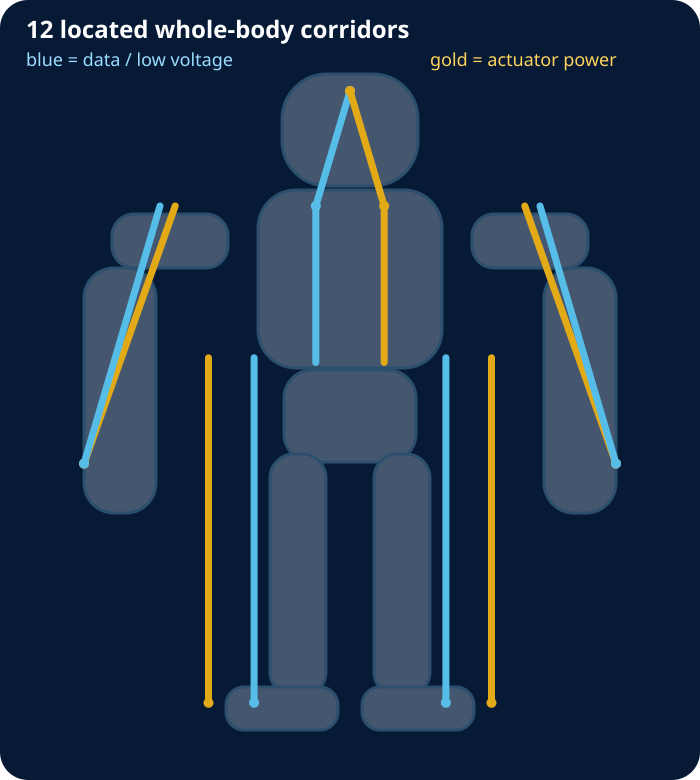

RS-LLEG
6 axes · RS-485 HALF-DUPLEX
Power: HN01_TORSO_POWER_SPINE | HN01_L_LEG_POWER
Data: HN01_TORSO_DATA_SPINE | HN01_L_LEG_DATA
Stall endpoint sum: 24.20 A
PRELIMINARY - NOT APPROVED FOR CONNECTION, FABRICATION, MOTION OR ENERGIZATION
Eight protected segment candidates, 25 actuator drops, 33 connector boundaries, and 12 located corridors.

6 axes · RS-485 HALF-DUPLEX
Power: HN01_TORSO_POWER_SPINE | HN01_L_LEG_POWER
Data: HN01_TORSO_DATA_SPINE | HN01_L_LEG_DATA
Stall endpoint sum: 24.20 A
6 axes · RS-485 HALF-DUPLEX
Power: HN01_TORSO_POWER_SPINE | HN01_R_LEG_POWER
Data: HN01_TORSO_DATA_SPINE | HN01_R_LEG_DATA
Stall endpoint sum: 24.20 A
3 axes · RS-485 HALF-DUPLEX
Power: HN01_TORSO_POWER_SPINE | HN01_L_ARM_POWER
Data: HN01_TORSO_DATA_SPINE | HN01_L_ARM_DATA
Stall endpoint sum: 6.90 A
3 axes · RS-485 HALF-DUPLEX
Power: HN01_TORSO_POWER_SPINE | HN01_R_ARM_POWER
Data: HN01_TORSO_DATA_SPINE | HN01_R_ARM_DATA
Stall endpoint sum: 6.90 A
1 axes · RS-485 HALF-DUPLEX
Power: HN01_TORSO_POWER_SPINE
Data: HN01_TORSO_DATA_SPINE
Stall endpoint sum: 4.40 A
2 axes · TTL HALF-DUPLEX
Power: HN01_TORSO_POWER_SPINE | HN01_L_ARM_POWER
Data: HN01_TORSO_DATA_SPINE | HN01_L_ARM_DATA
Stall endpoint sum: 1.76 A
2 axes · TTL HALF-DUPLEX
Power: HN01_TORSO_POWER_SPINE | HN01_R_ARM_POWER
Data: HN01_TORSO_DATA_SPINE | HN01_R_ARM_DATA
Stall endpoint sum: 1.76 A
2 axes · TTL HALF-DUPLEX
Power: HN01_TORSO_POWER_SPINE | HN01_HEAD_POWER_BRANCH
Data: HN01_TORSO_DATA_SPINE | HN01_HEAD_BRANCH
Stall endpoint sum: 1.76 A
| Route | Service | Centerline mm | Diameter mm | Minimum bend radius mm |
|---|---|---|---|---|
| HN01_TORSO_POWER_SPINE | ACTUATOR POWER | 170.0 | 14.0 | 70.0 |
| HN01_TORSO_DATA_SPINE | DATA/LOW VOLTAGE | 170.0 | 10.0 | 50.0 |
| HN01_HEAD_BRANCH | DATA/LOW VOLTAGE | 126.4 | 10.0 | 50.0 |
| HN01_HEAD_POWER_BRANCH | ACTUATOR POWER | 126.4 | 8.0 | 40.0 |
| HN01_L_LEG_POWER | ACTUATOR POWER | 375.0 | 12.0 | 60.0 |
| HN01_L_LEG_DATA | DATA/ENCODER | 375.0 | 9.0 | 45.0 |
| HN01_L_ARM_POWER | ACTUATOR POWER | 280.6 | 10.0 | 50.0 |
| HN01_L_ARM_DATA | DATA/ENCODER | 279.2 | 8.0 | 40.0 |
| HN01_R_LEG_POWER | ACTUATOR POWER | 375.0 | 12.0 | 60.0 |
| HN01_R_LEG_DATA | DATA/ENCODER | 375.0 | 9.0 | 45.0 |
| HN01_R_ARM_POWER | ACTUATOR POWER | 280.6 | 10.0 | 50.0 |
| HN01_R_ARM_DATA | DATA/ENCODER | 279.2 | 8.0 | 40.0 |
Primary manufacturer documentation defines every actuator-side pin, all eight STM32 channel pins, the five isolated RS-485 and three TTL interface-device pinouts, and exact data-only JST GH connector candidates. It does not release the assembled cables, branch protection, conductor sizing, routing durability, termination, EMC, or fault behavior.
Actuator pinouts · Bus assemblies · 25 drops · 33 boundaries · 12 corridors · Sources
50 Hz torque-producing current-equivalent traces.
Peak, P95, RMS and mean bounded envelopes.
Idle current, losses, gripping, transients, faults and thermal tests remain open.